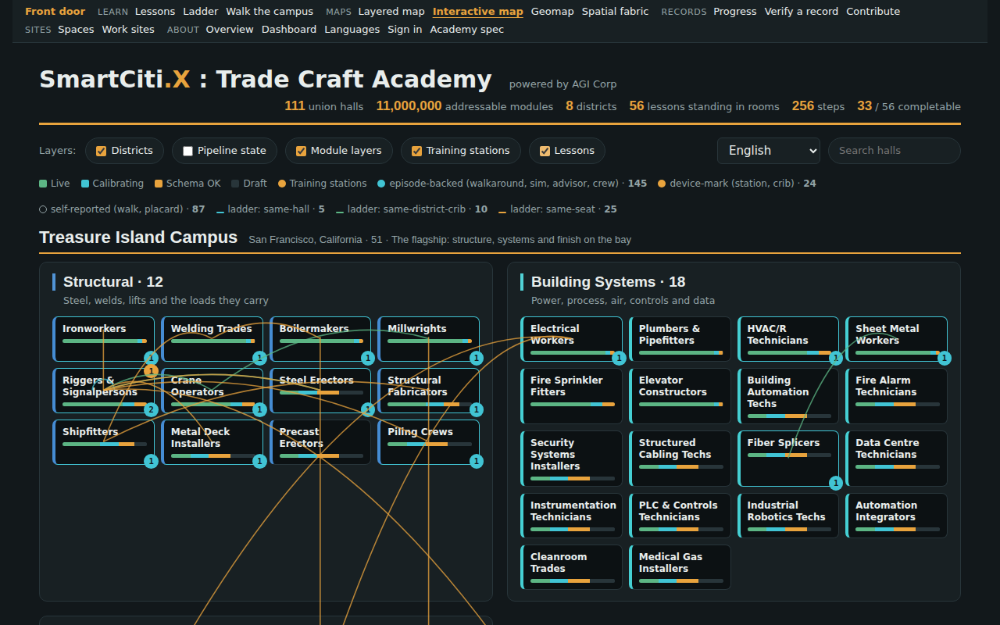
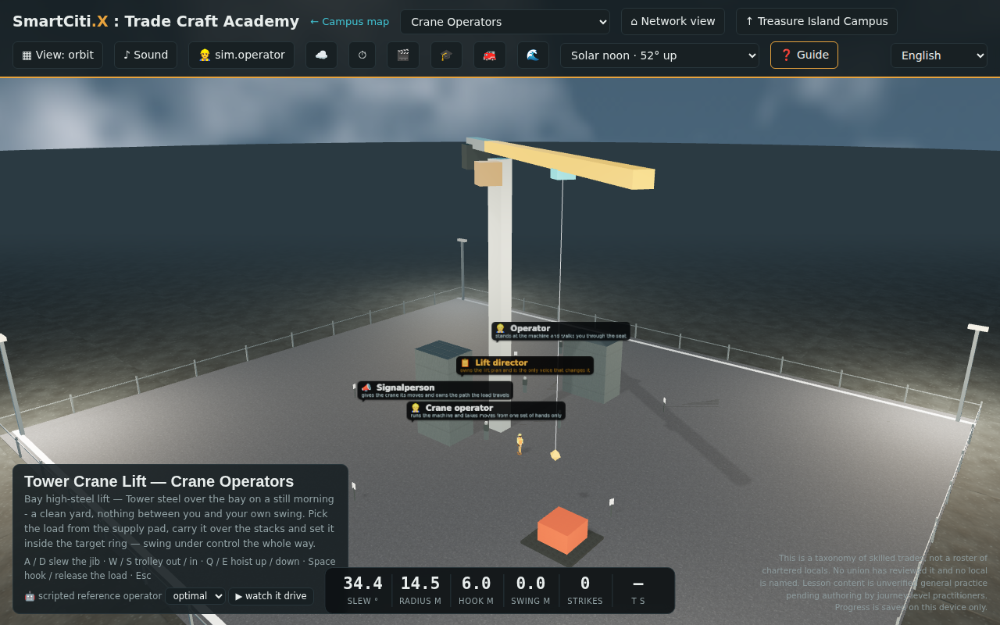
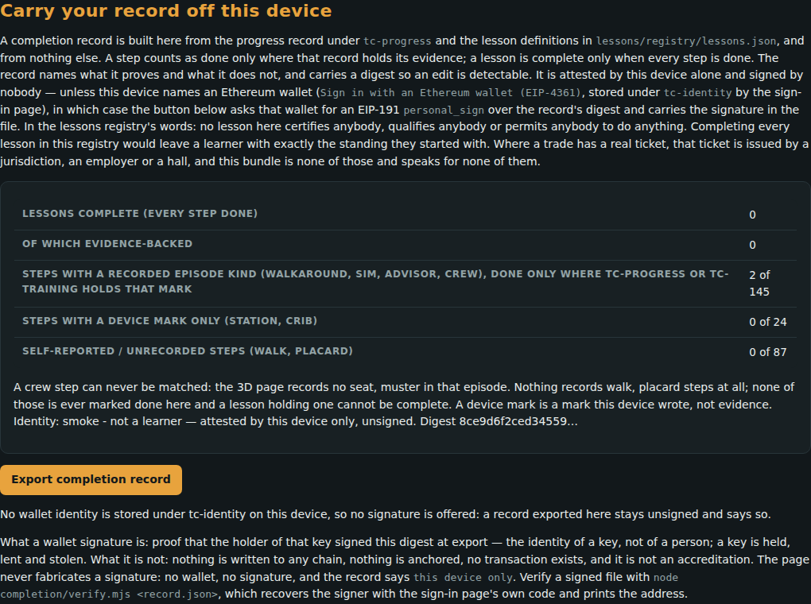
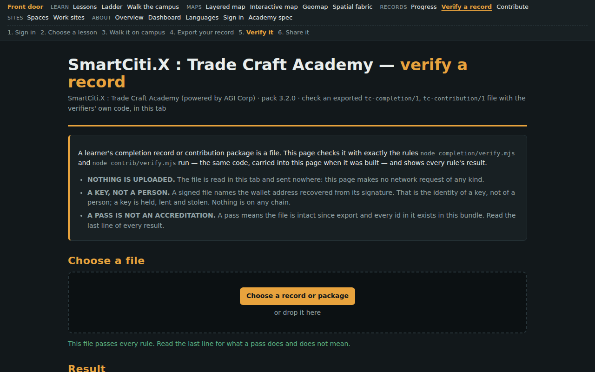
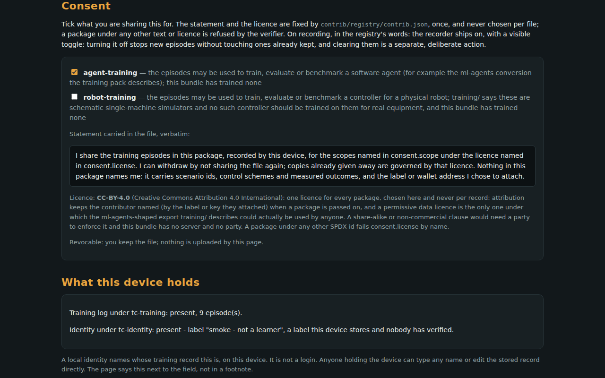

Learners and apprentices
Start with one lesson in your own trade, walk it on campus, and keep a record you can carry off the device. Quests and the wilds are play for the same trades: nothing you do there enters a record.
A walkable training world for the skilled trades — 111 union halls across 10 campuses, with 11 operable machine seats standing in the yard.
Every surface, figure and lesson in this bundle traces to a registry you can read, and each carries the word for how it was come by. Nothing is fetched at run time; nothing is generated when you look at it. Where a thing is unverified, it says so — on the page, not in an appendix.
Checking someone’s record? Verify a record · New here? Take the first lesson
Start with one lesson in your own trade, walk it on campus, and keep a record you can carry off the device. Quests and the wilds are play for the same trades: nothing you do there enters a record.
See which rungs of each trade’s ladder a simulator seat stands on and which it does not, and read the protocol that schedules practice.
Grade-band pathways that point a classroom toward the trades. The page states each district’s status as the registry records it.
Recheck a learner’s exported record in your own browser. A pass says the file is intact and consistent; it is not a certification.
Contribute training data under consent scopes, lay out work sites and spaces, or read what the programme is for.
Two ways to look before you walk. The footage beside each is this build, recorded from its own pages.
Every campus on one map, at the coordinates its registry records. Anything drawn inside a campus there is SCHEMATIC: no heading or survey is recorded for it.
The maps lay out every hall by district, with the training stations and each hall’s tool crib, and the 11 operable machine seats stand in the campus yard. A simulated run is practice, scored by a rubric you can read; it is not a certification.
The same loop the header shows on each of these pages: sign in, take a lesson, walk it, carry the record away, have it checked, and share it if you choose.
Say whose training record this device holds, or sign a message with a wallet. The page lists every method, including the ones that fail closed.

Pick your trade’s course. Each lesson names the hall it stands in and every step it will ask of you.

Walk the hall on foot, read its walls, and sit in a seat scored by a rubric you can read before you start.

Carry your record off this device as a file that carries its own digest.

Anyone can recheck the file in a browser. The page says what a pass means, and what it does not.

Build a contribution under consent scopes you choose. The page itself sends nothing anywhere.
Three things, in plain words. Everything further down this page is the index behind them, and the limits come straight after, because a reader who has already clicked has not been told anything.
A lift goes wrong in the talking long before it goes wrong in the air, so the first thing worth practising is the conversation.
why this one, and not an editor's pickIt is the first lesson in the registry's own order with nothing ahead of it in the lessons pack's advisory order over its 139 lessons - which is not the 3,663-rung skill ladder the seats stand on, and these lessons do not climb that one: each stands on a single rung of it - and whose steps reach a simulator seat. Opening it opens the whole Riggers & Signalpersons course: 3 lessons, 13 steps, in order.
what finishing it is notFinishing this does not make you a signalperson and does not qualify you to direct a lift; it is one scripted exchange and one schematic seat, and no hall, employer or authority has signed anything on the strength of it.
Each link opens that trade's lessons in the order the lessons registry's own ladder puts them, with every step numbered straight through, each step linking to the simulator seat it opens and saying so where it opens none. The number beside a trade is that course's step count.
Start with one lesson in your own trade, then walk it on the campus it belongs to. The record comes later, and only if you want it.
The limits, stated once, plainly, where a visitor meets them.
Read word for word from the registry the verifier is built on, so the front door cannot promise more than the check behind it.
nothing here is an accreditation
Every record in this bundle carries one of five words for how it was come by. They are not decoration: a build refuses a record that claims the wrong one, and the suites check it.
All 111 halls, banded into the 8 districts that organise them. Each tick is one hall; the colours are the same eight the campus map and the walkable world use.
11 operable training seats stand in the campus yard. Every one is a machine you sit in and drive, scored by a rubric you can read.
One link per seat, straight into the machine rather than into the front of the world. Each says what it asks of you and what it measures you against, because the rubric is the whole of the judgement: every axis below is computed from measured state, and nothing you say about a run can move it. schematic physics for practising control discipline - smooth inputs, swing management, ordered procedure. Not equipment certification; no seat time here counts toward one, and the assessment gates still demand unaided verification runs.
crane-liftPick the load from the supply pad, carry it over the stacks and set it inside the target ring — swing under control the whole way.
A / D slew the jib · W / S trolley out / in · Q / E hoist up / down · Space hook / release the load
excavator-trenchCut the marked trench to grade cell by cell and land every bucket in the spoil zone — the flagged cell holds a live utility at half depth, so it stops shallow.
A / D slew the house · W / S reach out / in · Q / E bucket up / down · Space dig / dump the bucket
forklift-runThread the cone lane, pick the pallet square on the forks, and set it down inside the dock bay — without disturbing a cone.
W / S drive / reverse · A / D steer · Space lift / set the pallet
weld-beadStrike the arc and run one clean bead down the marked seam — hold the gap inside the band and keep the torch travelling; linger on a segment and the plate burns through.
W / S travel the torch along the seam · Q / E raise / lower the torch (arc gap) · Space strike / break the arc
scaffold-bayErect one bay in the legal order — sills, frames, braces, planks, then guardrails. The rack refuses a part whose stage has not come, every refusal counts, and the bay is not done until the rails are on.
A / D choose the part rack · Space place the next part · R jump the rack to the legal stage
rigging-signalsYou are the signalperson: the lift card calls the moves, and the crane follows YOUR hands. Give each called signal in order — a wrong signal counts against you and the crane holds — and finish the lift with the stop signal.
Q / E signal hoist up / hoist down · A / D signal swing left / swing right · W / S signal trolley out / trolley in · Space signal STOP
load-chartWork the pick list against the chart on the board: at each radius the crane has one honest number. Hook the picks the chart allows and refuse the ones it does not — an overweight pick accepted is the failure that matters.
Space accept the pick - hook it · X refuse the pick - over the chart · Q / E walk the chart rows
pressure-washerStrip the fouling off the marked test panel to a clean finish — sweep the wand cell by cell and hold your standoff; crowd the surface and linger and the substrate gouges. Set the containment berm before you ever pull the trigger, not after.
A / D sweep the wand left / right across the panel · W / S sweep the wand up / down across the panel · Q / E stand off farther / move closer to the surface · Space pull / release the spray trigger · C deploy the containment berm / drain cover
airless-sprayerLay one even finish coat across the marked panel inside the masked line — hold your standoff and travel steady; crowd the surface or linger and the coat runs, rush a cell and it stays a holiday, and drift past the mask is overspray either way.
A / D sweep the gun left / right across the panel · W / S sweep the gun up / down across the panel · Q / E stand off farther / move closer to the surface · Space pull / release the spray trigger
boom-liftSet the stabilizers on the level pad, clip your harness to the basket anchor, then take the basket to every marked work point in order and back down — keeping the load moment under the line the whole way and the basket out of the overhead-line exclusion zone.
A / D swing the turret · W / S extend / retract the boom · Q / E raise / lower the boom · Space clip the harness (on the ground) / do the task at the work point · C set the stabilizers on the pad
overhead-craneHook the load, hoist it to carry height, travel the bridge and then the trolley along the marked route — never over the pedestrian aisle or the workstation, always above the obstacles — and set it down inside the target square, sway under control the whole way.
A / D travel the bridge · W / S traverse the trolley · Q / E hoist up / down · Space hook / release the load
15 surfaces, each built from the same registries, for a reader who wants the whole thing rather than a course. The course above is the way in if you do not already know this architecture.
The module graph and the simulators, joined where a member can see it. Each trade's own 33 cells - 11 strands by 3 tiers - with the prerequisite edges the registry declares, and the cell each training seat proves outlined and linked straight into that seat. The same cell can be taken 9 ways: 3 modalities across 3 support bands.
What it does not claimEvery seat is machines/applied, so a seat stands on 1 of 33 cells and 10 of 11 strands carry no simulator at all. The ladder draws the gaps as plainly as the coverage, and a passing run certifies nobody.
139 lessons · 568 steps you can stand inThe walkable lessons139 lessons a learner walks rather than reads: 568 steps that send you to a placard, a station, a tool crib, a walkaround, an advisor or a seat, in the room where the work happens. Each lesson names the hall it stands in and links through to it, and each hall names its lessons back.
What it does not claimA step marks itself in the open tab and nowhere else: nothing is stored, and no lesson carries a practitioner sign-off.
5 methods · 2 that work here · 0 that authenticate anybodySign in, and what a bundle with no server cannot doName whose training record this device holds, or sign a real EIP-4361 message with a wallet. All 5 methods are described, including the ones that are off and exactly what each is missing.
What it does not claim0 of 5 authenticate anybody. An authorization-code exchange needs a server holding a client secret and this bundle has none, so Google, Microsoft and email-link fail closed rather than setting a flag that would report a learner as signed in when nothing signed them in.
111 halls · 10 campuses · 11 training seatsThe walkable worldEvery hall's floor plan stands up as a building you walk through on foot, with doorways cut where two rooms actually meet and partitions you cannot pass through. Ten campuses stand on ten different regional surfaces - a former naval station's bleached apron, delta crushed shell, rail ballast, mill slag - and your footsteps take their sound from whatever the registry says is under you. 11 operable training seats stand in the yard, and the index below links straight into each one: Tower Crane Lift, Excavator Trench Cut, Forklift Yard Run, Weld Bead Run, Scaffold Bay Build, Rigging Signal Call, Load Chart Judgment, Pressure Washer Surface Clean, Airless Paint Sprayer Finish, Boom Lift Basket Work and Overhead Crane Shop Move.
What it does not claimThe physics is schematic - the shape of a hydraulic drive, not any machine's response curve - and nothing here is equipment certification.
toggleable layers · 8 languagesThe interactive campus mapAll 111 halls with layers you switch on and off: districts, pipeline state, module layers, training stations. Every hall opens to its own generated floor plan, and the whole surface reads in 8 languages including right-to-left.
What it does not claimA taxonomy of skilled trades, not a roster of chartered locals: no real union's logo is drawn and no local is named.
10 campuses on a real WGS84 mapThe network geomapThe network on a real map, with every campus, anchor and city frame carrying its own provenance in its own popup - RECORDED where a coordinate was taken from a public source, AUTHORED where it was placed by us, DERIVED for the great-circle routes between them.
What it does not claimAn AUTHORED coordinate is a placement, not a site. No property has been surveyed and no building is depicted.
every figure read from its own registryThe network dashboardEach number on this page is read live from the pack that owns it rather than typed beside it - 84 floor finishes, 51 wall finishes, 22 ground recipes, 25 training stations - with the progress meter toward ten walkable worlds and both provenance tiers side by side.
What it does not claimA figure being consistent is not a figure being verified. These count what this bundle contains.
the real control plane, running in the pageThe adaptive consoleThe Adaptive Challenge Protocol running on real pack data: the ZPD dial that picks the next challenge, the hint ladder that opens only as far as it has to, and the gates between tiers. Not a mock - the same control plane the protocol specifies.
What it does not claimIt schedules practice. It does not assess competence, and nothing it records is a credential.
the ladder, and the honest numbersThe programmeWhat the Academy is for, how the ladder is meant to work, and the figures without the polish - including the ones that are smaller than a prospectus would print.
What it does not claimLesson content is unverified general practice pending authoring by journey-level practitioners from the halls.
111 generated floor plansThe campus planThe engineered drawing: district hues, three-letter hall codes, and a floor plan generated for every hall from the skill strands that hall actually teaches.
What it does not claimA functional programme derived from a trade's own strands, not a survey of a building. No address data exists for any hall.
8 locales, right-to-left includedLanguagesThe Academy overview in every locale the bundle carries, with the right-to-left rendering asserted rather than assumed.
What it does not claimTranslated by machine and not yet reviewed by native speakers of the trades' own vocabulary - the roadmap says so.
including the adversarial review findingsThe protocol specificationThe Adaptive Challenge Protocols rendered in full, with the adversarial review kept in the document rather than answered privately - the findings against it are part of it.
What it does not claimA specification is a design, not a proof that the design works on people.
6 spaces · 102 items drawn to scaleThe floor plansdeclared, not yet walkabledeclared, not yet walkable: an AUTHORED proposal composed from this bundle's own assets; nothing here is built into the 3D world, no dimension is a measurement of a real venue, and no duration, price or accreditation is stated
What it does not claimno duration, price, accreditation or venue
2 consent scopes · 16 verifier rulesThe page that builds a contributionnothing is sent anywhere by this bundlenothing is sent anywhere by this bundle: no platform is integrated, no destination is validated, no upload exists. The contribute page writes a file to the learner's own downloads and stops.
What it does not claimthat any agent or robot learned from this package: exporting this file trains nothing by itself: no agent exists in this bundle and none is claimed to, until one is actually trained against this data outside it
8 sites · 28 crew rolesThe site plansno two learners have ever been on a site together herea work site is a scenario where a crew drawn from at least two unions works one job with hand-offs; its completion is checked offline by worksites/verify.mjs from the members' own exported tc-completion/1 records and tc-contribution/1 packages, one distinct record per role, each verified by its own pack's verifier first, with the hand-offs held in order by the episodes' timestamps
What it does not claimno two learners have ever been on a site together here: this bundle has no multi-user session, no shared world state and no server. A crew completion is N separate records, each made alone on its own device, read side by side